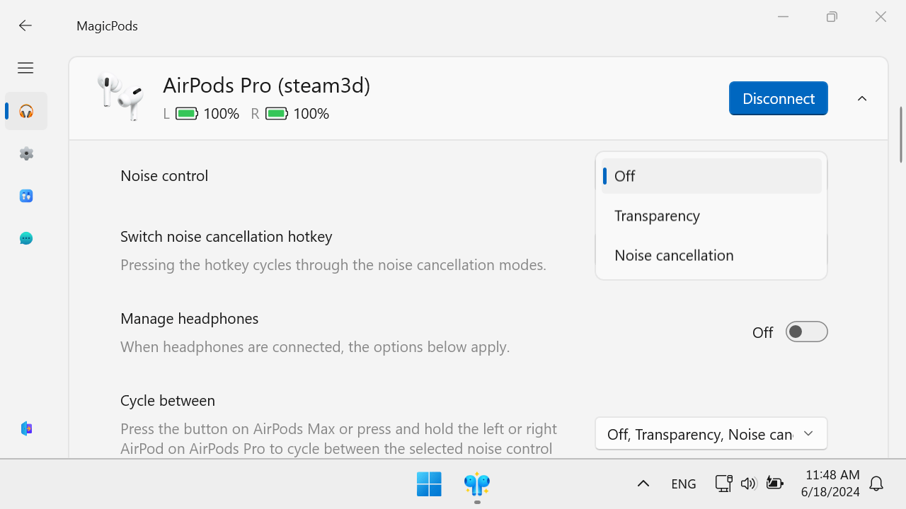

MagicAAP driver⚓︎
Warning
Only install the MagicAAP driver if you are an advanced user and are prepared to reinstall Windows if problems occur. Requires MagicPods version 2.0.72.0 and above.
MagicAAP is a Bluetooth profile driver that allows you to add near-full support for all AirPods and some Beats headphones.

Installation⚓︎
The MagicAAP driver is not yet digitally signed, so you will need to switch Windows into test mode to install it. A message will appear in the bottom right corner of the screen indicating that Windows is in test mode.
0. Create a restore point⚓︎
- Press
Startand typeCreate a restore pointin the search box - In the search results, select
Create a restore point - In the window that opens, click
Create - Type the title and press
Create
If there are any problems, you can use this restore point to restore Windows. If you use BitLocker, you will also need a recovery code.
1. Copy the BitLocker recovery key⚓︎
If you are using BitLocker, BitLocker will detect the change in system settings and request a recovery key. You will need to enter the key twice during the installation process.
| Icon | Description |
|---|---|
| BitLocker off | |
| BitLocker on |
- Open my computer. Right-click the drive with the lock icon and select
Manage BitLockerfrom the context menu
- In the window that opens, click
Back up your recovery keyand follow the instructions
- Repeat the process for each drive that uses encryption
Keep the recovery codes in your phone, notebook, or on another computer because you will need to enter the recovery code before Windows starts.
I recommend using the Google query BitLocker recovery key for more detailed instructions.
2. Disable Secure Boot⚓︎
- Enter your computer's BIOS. Normally, when you turn on your computer, you will need to press one of the F1, F2, F12 or Esc keys to enter the BIOS
- Find the
Secure Bootoption in the BIOS settings and disable it
- Save your changes and restart your computer
- If you are using BitLocker, enter the
Recovery keywhile the computer is booting
I recommend using the Google query Disable Secure Boot for more detailed instructions.
3. Switch Windows to test mode⚓︎
- Right-click on the Windows icon
- From the context menu, select
Terminal (Admin)orPowerShell (Admin)
- Enter command:
bcdedit /set testsigning ON
4. Restart the computer
5. If you are using BitLocker, enter the Recovery key while the computer is booting
4. Install the MagicAAP driver⚓︎
Optionally you can check the integrity of the magicaap.zip
SHA256 E16A8F1C6052432A388D33FDD4AC6D4F3CA909CF4C3DD37A152DB0E9342B66C2
Automatic installation⚓︎
- Download MagicAAP driver
- Unzip the driver archive and navigate to the driver folder
- Right-click on
MagicAAP.infand selectInstallin the context menu
- Confirm the installation of an unsigned driver
Manual installation⚓︎
- Download MagicAAP driver
- Unzip the driver archive
- Press
Startand typeDevice Managerin the search box - In the search results, select
Device Manager - In
Device Manager, findAAP Serverin theOther devicessection - Right-click on it and select
Update driverfrom the context menu
- In the window that opens, click on
Browse my computer for drivers, then specify the path to the driver folder
- Click
Next, the driver will be installed - Repeat steps 5-8 for each
AAP Serverdevice
You're ready to go. Launch MagicPods and connect your AirPods. Expand the settings for the AirPods you want, and you'll see the familiar iPhone-like settings.
Uninstalling⚓︎
To uninstall the driver and return Windows to normal mode, repeat the installation steps in reverse order.
1. Copy the BitLocker recovery key⚓︎
If you are using BitLocker, BitLocker will detect the change in system settings and request a recovery key. You will need to enter the key twice during the uninstalling process.
| Icon | Description |
|---|---|
| BitLocker off | |
| BitLocker on |
- Open my computer. Right-click the drive with the lock icon and select
Manage BitLockerfrom the context menu
- In the window that opens, click
Back up your recovery keyand follow the instructions
- Repeat the process for each drive that uses encryption
Keep the recovery codes in your phone, notebook, or on another computer because you will need to enter the recovery code before Windows starts.
I recommend using the Google query BitLocker recovery key for more detailed instructions.
2. Uninstalling the MagicAAP driver⚓︎
- Press
Startand typeDevice Managerin the search box - In the search results, select
Device Manager - In
Device Manager, findMagicAAPin theBluetoothsection - Right click on it and select
Uninstall driverin the context menu
- Check
Attempt to remove the driver for this device.and clickUninstall
- Repeat steps 3-5 for each
AAP Serverdevice
3. Switch Windows to normal mode⚓︎
- Right-click on the Windows icon
- From the context menu, select
Terminal (Admin)orPowerShell (Admin)
- Enter command:
bcdedit /set testsigning OFF
 4. Restart the computer
4. Restart the computer
5. If you are using BitLocker, enter the Recovery key while the computer is booting
4. Enable Secure Boot⚓︎
- Enter your computer's BIOS. Normally, when you turn on your computer, you will need to press one of the F1, F2, F12 or Esc keys to enter the BIOS
- Find the
Secure Bootoption in the BIOS settings and enable it
- Save changes and restart your computer
- If you are using BitLocker, enter the
Recovery keywhile the computer is booting
All done. Windows will now run normally and the message in the bottom right-hand corner of the desktop will no longer appear.